B cells, antibodies, and vaccination
Antibodies co-evolve with pathogens

B cells determine antibody diversity

Structure of a B cell receptor

Origins of B cell receptor diversity
VDJ recombination
Affinity maturation
VDJ loci

VDJ recombination

Selection on naive repertoire
Stability
Autoreactivity
Germinal centers

Affinity maturation

GC B cells evolve

AID induces somatic hypermutation

Mutation rate varies over the variable region

GCs produce plasma and memory cells
In humans, memory cells evolve further

Evidence from sampling lymph nodes
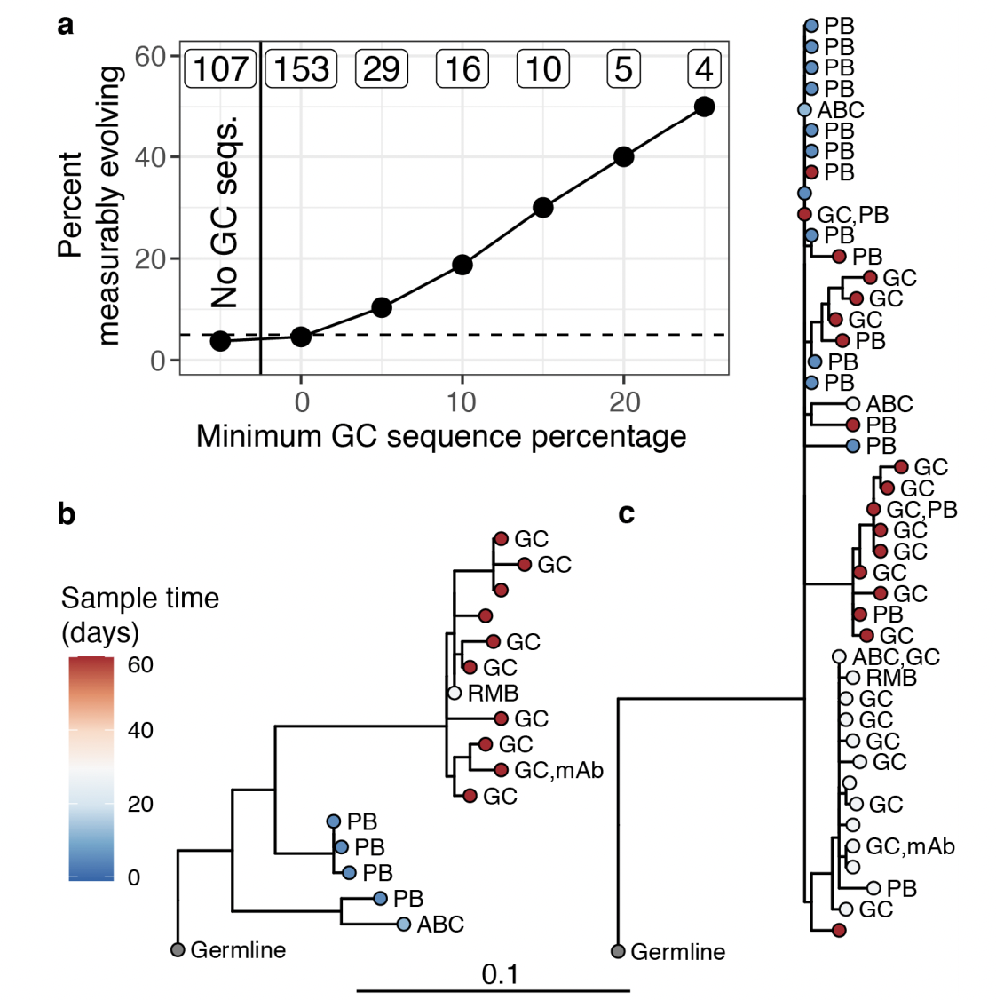Clones can be long-lived

Broadly neutralizing antibodies are often highly diverged

Broadly neutralizing antibodies to flu elusive

Stalk might not be "evolution-proof"
Historically conserved sites might not be constrained
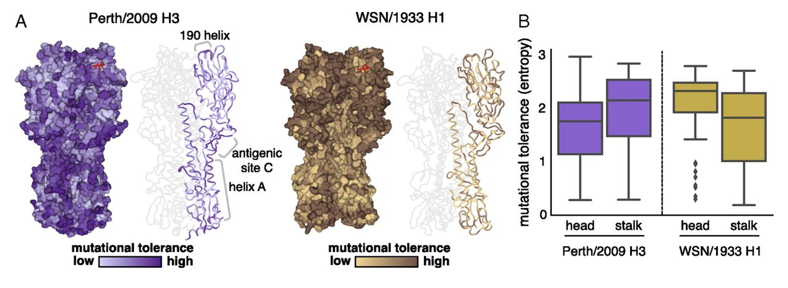Why do some people develop more bnAbs?
Can we induce high levels in everyone?
How can we guarantee they will dominate?
"Restricted" responses to epitopes

Genotype affects response to H5N1 vaccination

Allele copy number affects clone frequency

Ethnic differences in copy number

Response to 2009 H1N1 vaccine

Stalk responses can fade

Stalk antibodies bind with lower avidity

Stalk antibodies are more polyreactive

Birth year differences in stalk targeting
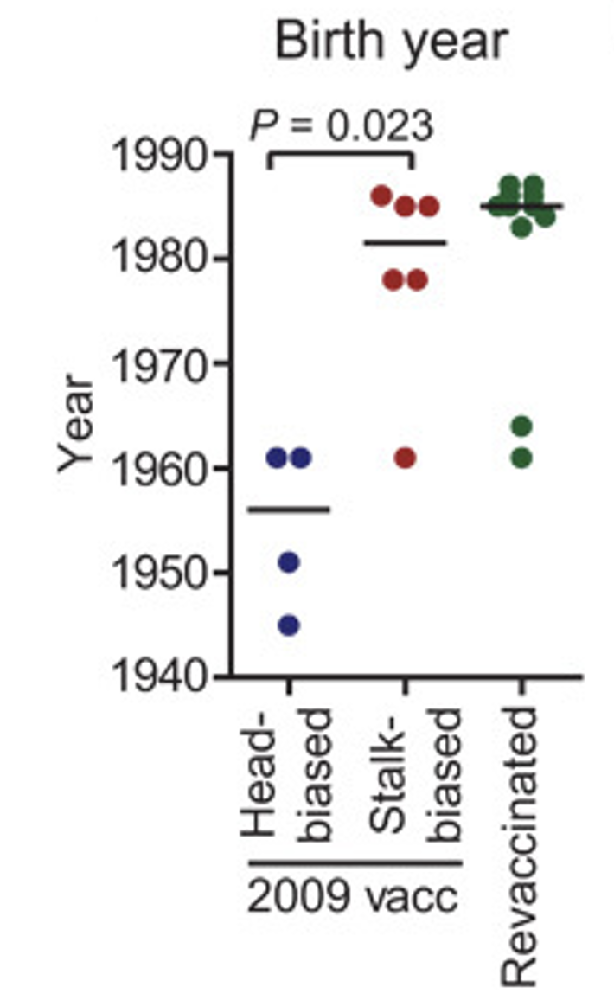Early infections affect vaccine response

A general model of sin

In 2013, H1N1 acquired K166Q

Uneven recognition

Homology with childhood strain

Recapitulation in ferrets

"Antigenic seniority"

Broad cohort-specific effects

What determines Ab immunodominance?
Host genotype
Order (Age?) of infection
Immunogenicity of antigen (e.g., adjuvanted vaccine vs. mild infection)
Immunogenicity of epitopes
Autoreactivity
Measuring the impacts of vaccination
Potential impacts of vaccination
"Direct effects" - on the recipient
"Indirect effects" - on non-recipients
Immunological, infection-related, clinical, epidemiological, and evolutionary
In RCT, vaccine provides indirect protection

Definitions of "VE"
Vaccine efficacy: derived from clinical trial with randomization
Vaccine effectiveness: derived from observational data (no control over who's vaccinated)
This distinction is critical
Voluntary vaccinees are very different from non-vaccinees
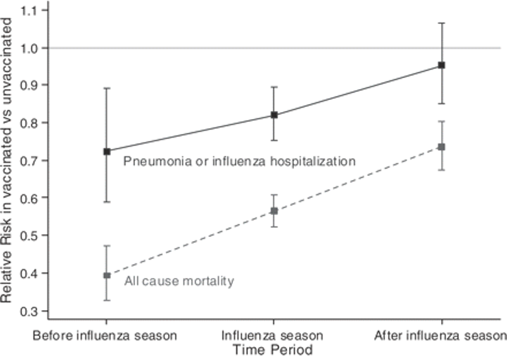(also, people who enroll in clinical trials are different from those who don't)
Efficacy (or effectiveness) against what?
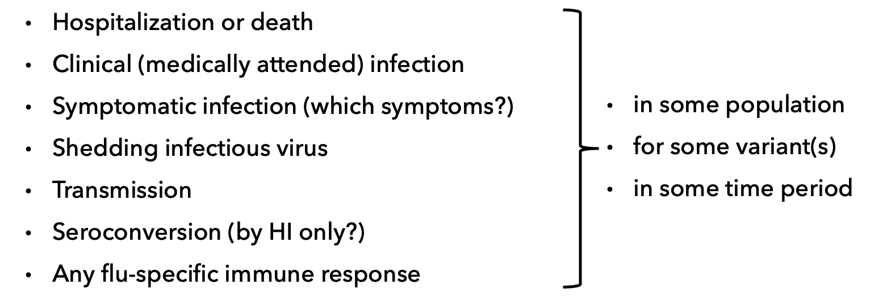VE often comes from observational studies
Trials can be unethical if recommendation in place
Trials can be very expensive
Outpatient and hospitalization data are "convenient"
Common observational study approach: test-negative design
Prospective vs. test-negative design
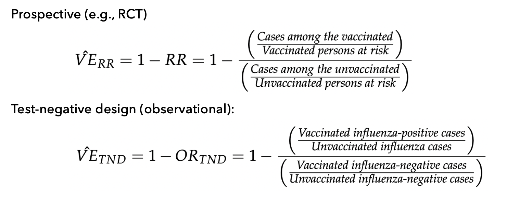Some implicit assumptions of TND
Vaccine is not "leaky" (all-or-nothing protection)
Decision to vaccinate is random
We can mitigate a few problems by statistically adjusting for or stratifying by comorbidities, age, risky behavior, etc., so we can estimate their effects (purely associational) separately---but we still can’t measure critical things, and we don’t know everything we need to measure.
What is the reference group?
Intuitively, "you" without vaccination, but we can't measure that!
Practically, an unvaccinated person (of the same age, health status, risk appetite...)
... who was recently infected?
... an "average" unvaccinated person?
Influenza vaccine effectiveness is low
H3N2: 33% (95% CI: 26-39)
B: 54% (46-61)
pH1N1: 61% (57-65)
H1N1: 67% (29-85)
What's going on?
Poor strain selection (antigenic mismatch)
Egg adaptations (antigenic mismatch)
Interaction with pre-existing immune responses
Mismatch does not drive low VE
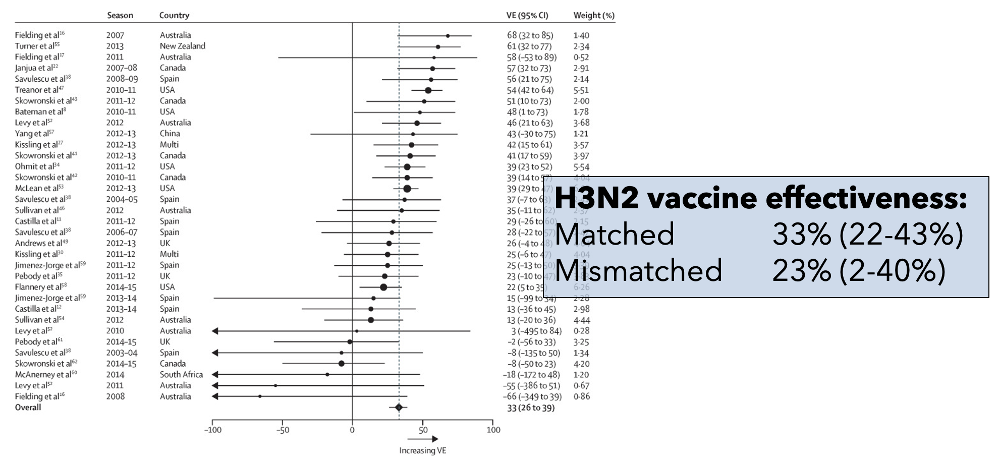OAS might "hide" strain updates
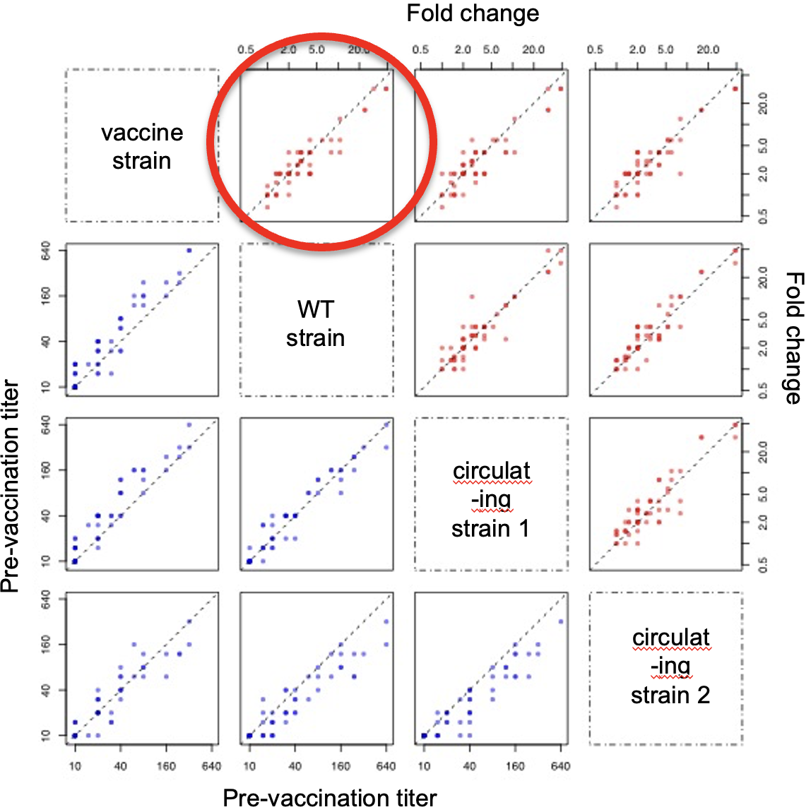VE can be erratic by birth year
Unexpected drop in VE in middle-aged in 2015-2016 in the U.S. and Canada
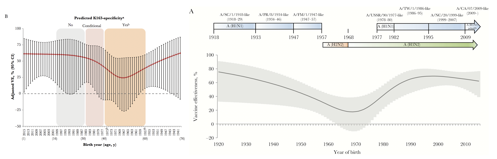Vaccine effectiveness tracks cohorts
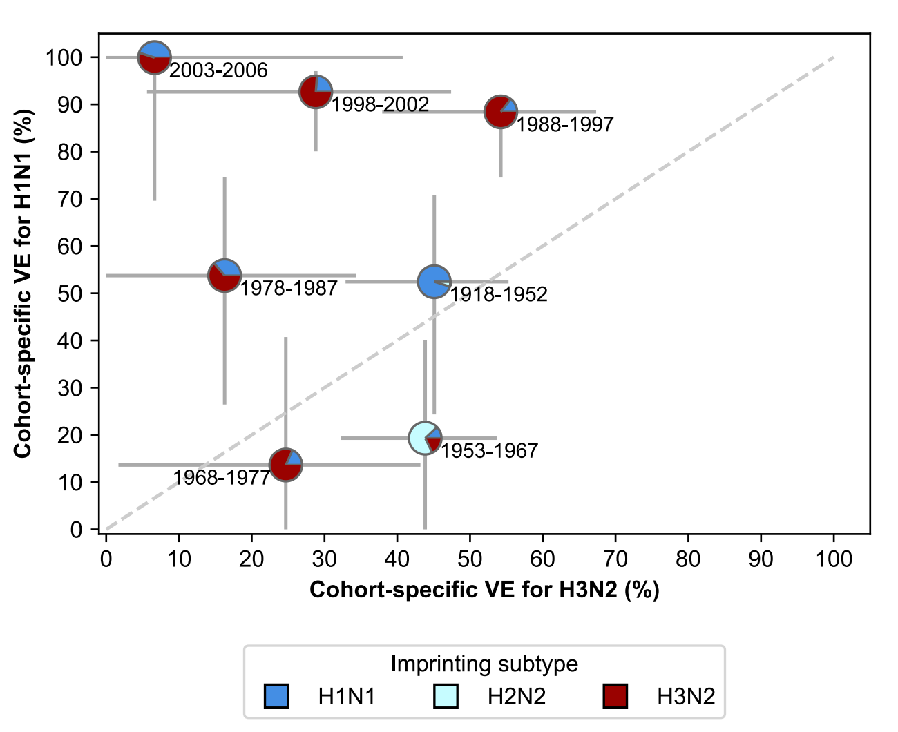Another curiosity: low VE in repeat vaccinees

In U.S., flu vaccine coverage is high(-ish)

In U.S., most vaccinees are repeat vaccinees
(Vaccinated this year and last year)
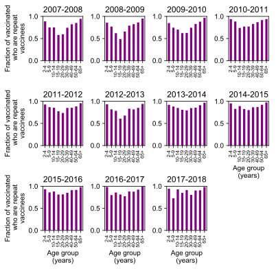Potential explanations for apparent increase in infection risk in repeat vaccinees
- Failure to adjust for timing of vaccination + waning: modest effect
- Failure to account for nonrandom switching: modest effect, wrong direction.
Prior infection influences vaccine responses